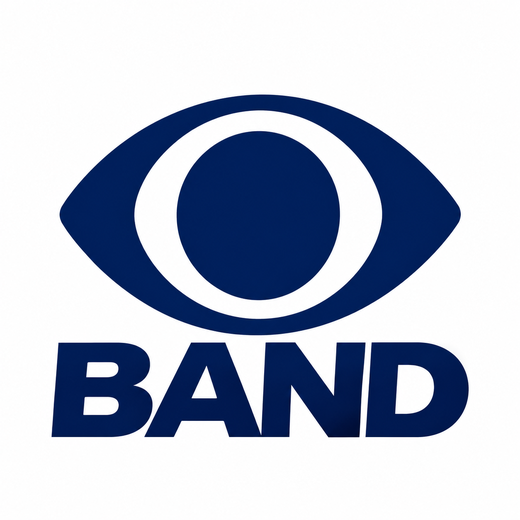

02. TV CULTURA - SPConfirmado em sua TV
TV ONLINE
Seus canais selecionados em uma playlist pessoal. Os links de vídeo vêm de fontes externas e podem mudar; o GitHub hospeda somente a lista e a capa.
Canais principais

04. SBT HD - SPConfirmado em sua TV

05 - GLOBO HD - SPConfirmado em sua TV
07 - RECORD HD - SPConfirmado em sua TV
09. REDE TV! HD - SPConfirmado em sua TV

11. GAZETA HD - SPConfirmado em sua TV

13. BAND HD - SPConfirmado em sua TV
14. AXN HD - BRConfirmado em sua TV

15. AMC HDLink aprovado nos testes da LG

16. SPACE HDLink aprovado nos testes da LG
17. CINEMAX HDLink aprovado nos testes da LG
18. UNIVERSAL TVReprodução confirmada; áudio PT-BR não confirmado
DISNEY
CHANNEL HD
CHANNEL HD
19. DISNEY CHANNEL - HDLink informado pelo proprietário; idioma e qualidade não verificados
Configurar TV ONLINE no SS IPTV
A lista abre diretamente nos canais, sem pastas. A lista mostra as posições 01 a 19, terminando em 19. DISNEY CHANNEL - HD. Não há pastas nem canais de backup publicados na grade principal.
Link atual da playlist (mantido)
Carregando endereço...
Outros arquivos
Listas disponíveis: ambos os arquivos contêm somente as 19 posições da TV ONLINE, sem canais de backup.
O título mostrado no bloco da tela inicial é configurado nas Listas externas do SS IPTV. Altere-o para TV ONLINE; o GitHub não muda esse título automaticamente.
Identidades visuais das emissoras são exibidas a partir de links externos. Use os sinais com autorização de distribuição; reprodução e programação regional são determinadas pela fonte, não pelo nome da playlist.